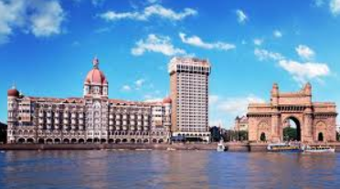

History of The Taj Hotel
Jamsetji Nusserwanji Tata, founder of the Tata Group, opened the Taj Mahal Palace, a hotel in Mumbai (formerly called Bombay) overlooking the Arabian Sea, on 16 December 1903. It was the first Taj property and the first Taj hotel. There are several anecdotal stories about why Tata opened the Taj hotel.

According to a story, he decided to open the hotel after an incident involving racial discrimination at the Watson's Hotel in Mumbai, where he was refused entry as the hotel permitted only Europeans. Hotels that accepted only European guests were very common across British India then. According to another story he opened the hotel when one of his friends expressed disgust over the hotels that were present in Bombay then. But a more plausible reason was advanced by Lovat Fraser, a close friend of the Tata and one of the early directors of the IHCL group, that the idea had long been in his mind and that he had made a study on the subject. He did not have any desire to own a hotel but he wanted to attract people to India and to improve Bombay. It is said that Jamsetji Tata had travelled to places like London, Paris, Berlin and Düsseldorf to arrange for materials and pieces of art, furniture and interior artefacts for his hotel. The Taj group has since then developed and flourished, under the Tata Group.
The Taj Mahal Palace in Mumbai is the first hotel of Taj, opened in the year 1903. In 1974, the group opened India's first international five star deluxe beach resort, the Fort Aguada Beach Resort in Goa. In 1970s, the Taj Group also began its business in metropolitan hotels, opening the five-star deluxe hotel, Taj Coromandel in Chennai, in 1974, acquiring an equity interest and operating contract for the Taj President (now Vivanta by Taj - President), a business hotel in Mumbai, in 1977, and also opening the Taj Mahal Hotel in Delhi in 1978.
The group has been converting royal palaces in India into luxury hotels since the 1970s. The first palace to be converted into a Taj luxury hotel was the Lake Palace in Udaipur, in 1971. Other examples include the Rambagh Palace in Jaipur, Umaid Bhawan Palace in Jodhpur, Falaknuma Palace in Hyderabad and Nadesar Palace in Varanasi. A part of the Umaid Bhawan Palace in Jodhpur is a Taj luxury hotel and it is a member of the Leading Hotels of the World
In 1980, the Taj group opened its first hotel outside India, the Taj Sheba Hotel in Sana'a, in Yemen and in the late 1980s, acquired interests in the St. James' Court Hotel (now comprising Taj 51 Buckingham Gate Suites and Residences and St. James' Court, A Taj Hotel) in London. In 1984, the Taj group acquired, under a license agreement, each of the Taj West End in Bangalore, Taj Connemara (now Vivanta by Taj - Connemara) in Chennai and Savoy Hotel in Ooty. With the opening of the Taj West End in Bangalore, the Taj Group made its foray into Bangalore.